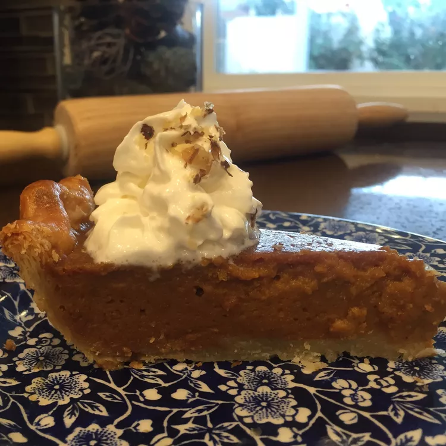

Butternut Squash Pie

Looks like pumpkin, tastes like pumpkin, but it's butternut squash!
Ingredients
- 1 ½ cups peeled and cubed butternut squash
- 1 cup lightly packed brown sugar
- 1 tablespoon cornstarch
- 1 egg, beaten
- 1 cup evaporated milk
- 1 teaspoon ground cinnamon
- 1 pinch ground allspice
- 1 pinch ground cloves
- 1 pinch ground ginger
- 1 pinch ground nutmeg
- 1 (9 inch) unbaked pie shell
Steps
- Place squash in a saucepan with enough water to cover. Bring to a boil, and simmer over medium heat until tender, about 15 minutes. Drain, and cool.
- Preheat oven to 350 degrees F (175 degrees C).
- In a blender or food processor, combine butternut squash, brown sugar, cornstarch, egg, milk, cinnamon, allspice, cloves, ginger, and nutmeg. Process until smooth. Pour into the unbaked pie shell.
- Bake in preheated oven for 50 minutes, or until a table knife comes out clean when inserted in the center.